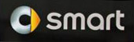
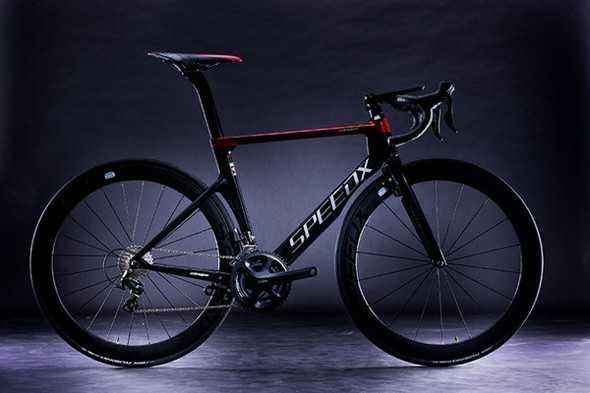
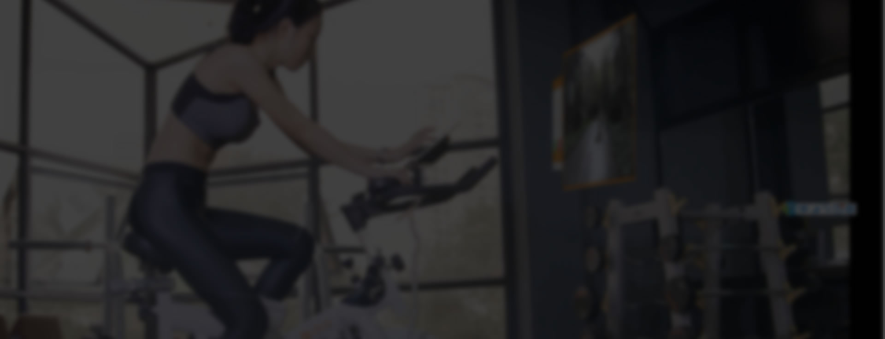
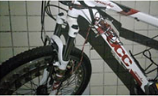
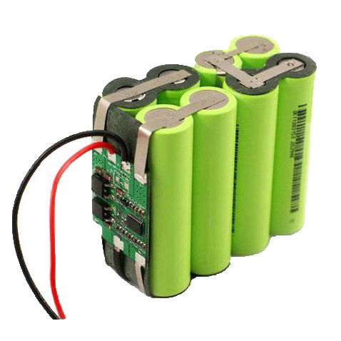
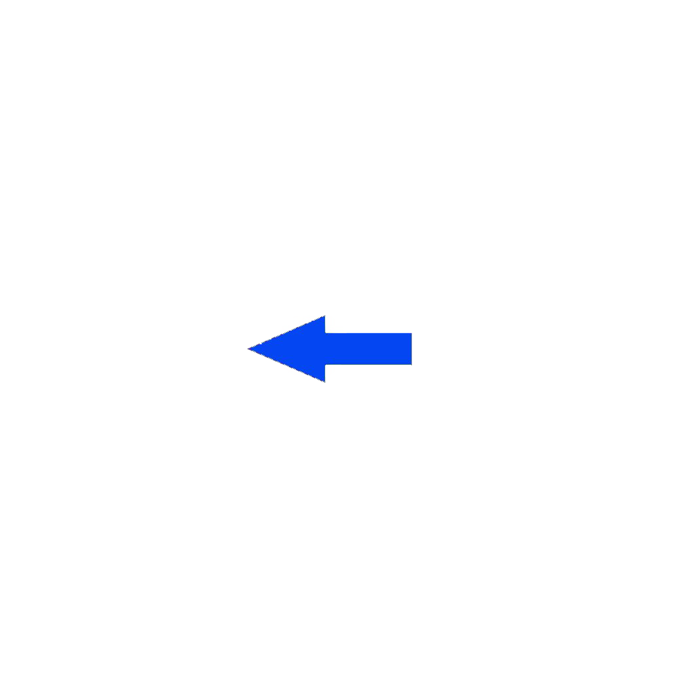
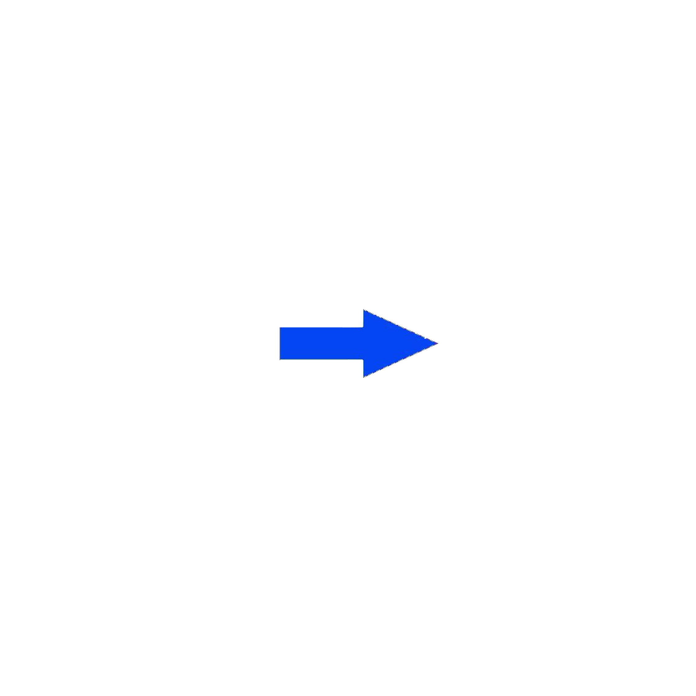

首页
智能运动平台
智能产品
商城
关于我们
最新动态
免费试用


社交分享
运动数据
排行榜
无阻式发电设备是我们自主研发的一款无摩擦阻力的自行车发电设备，由固定载版、线圈、磁体三部分组成，具有快拆功能，方便我们的用户在更换单车时拆装设备。 无阻式发电设备采用了一种巧妙地创新型发电形式，通过这种形式发电可以有效地避免摩擦阻力的产生，大大的提高了使用起来的灵活性与实用性，相比于传统的发电设备，我们的设备功率更高可以同时为移动设备、智能模块及车灯供电。
这个发明具有创造性、实用性。它使骑行过程中的的智能设备不再受束缚，同时提高续航能力和可操作的的灵活性。通过对传统自行车进行改进，添加NFC 智能车锁技术与自行车无摩擦阻力发电技术，消除在骑行过程中由于手机无法持续续航所带来的烦恼，智能模块也满足了人们对智能骑行的兴趣，NFC的解决方案使智能锁变得更加安全实用与便捷。同时设备各组件已模块化处理，给了消费者更多的自主选择空间。
组装了无阻式智能自行车发电设备后，自行车能够在不影响骑乘体验的同时高效发电，发电量完全能满足NFC智能车锁的运作，并为其他电子产品提供电力。值得一提的是，在给电子产品供电的设计中，考虑到电量持续供给的稳定性，本设备设计有专门的18650电池在发电的过程中储存电量，以确保自行车静止时不影响供电的稳定，从而更好得保护了电子设备，在漫漫旅途中电子设备因电力续航能力不足而无法使用的情况将会得到解决。


content—ele
NFC
part_ele

 无阻式发电设备是我们自主研发的一款无摩擦阻力的自行车发电设备，由固定载版、线圈、磁体三部分组成，具有快拆功能，方便我们的用户在更换单车时拆装设备。
无阻式发电设备采用了一种巧妙地创新型发电形式，通过这种形式发电可以有效地避免摩擦阻力的产生，大大的提高了使用起来的灵活性与实用性，相比于传统的发电设备，我们的设备功率更高可以同时为移动设备、智能模块及车灯供电。
无阻式发电设备是我们自主研发的一款无摩擦阻力的自行车发电设备，由固定载版、线圈、磁体三部分组成，具有快拆功能，方便我们的用户在更换单车时拆装设备。
无阻式发电设备采用了一种巧妙地创新型发电形式，通过这种形式发电可以有效地避免摩擦阻力的产生，大大的提高了使用起来的灵活性与实用性，相比于传统的发电设备，我们的设备功率更高可以同时为移动设备、智能模块及车灯供电。